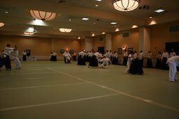
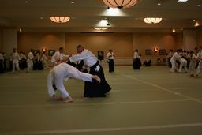
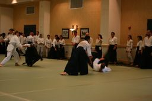
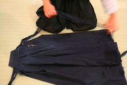

Aikido
Aikido is a Japanese martial art that emphasizes using an attacker's own force against them, rather than directly opposing it. It was developed in the early 20th century by Morihei Ueshiba, who sought to create a martial art that was not solely focused on defeating an opponent, but also on cultivating a peaceful and harmonious society. Aikido techniques are based on circular movements, joint locks, throws, and pins.
The practice of Aikido emphasizes the idea of "ai-ki", which translates to "harmony-energy". This idea is central to Aikido theory, which emphasizes blending with an attacker's movements rather than opposing them. Aikido also emphasizes the use of "ki", or life energy, in its techniques. Practitioners are taught to cultivate a sense of relaxation and focus in order to move with maximum efficiency and effectiveness.
Aikido is often described as a "soft" martial art, in contrast to "hard" martial arts like Karate or Tae Kwon Do. This is because Aikido techniques are designed to control or redirect an attacker's force, rather than meeting it head-on with force of one's own. As a result, Aikido can be a useful martial art for self-defense, particularly in situations where an attacker is larger or stronger than the defender.
In addition to its martial aspects, Aikido also has a strong philosophical component. Morihei Ueshiba believed that the practice of Aikido could help individuals develop a sense of inner peace and compassion, which could then be extended to the wider world. This idea is reflected in Aikido's emphasis on harmony and non-violence.
Many Aikido practitioners have stories of how the practice has helped them in real-life situations. For example, some have reported using Aikido techniques to break their fall after slipping on ice or falling off a bicycle. Others have used Aikido techniques to diffuse potentially violent situations in their everyday lives.
Overall, Aikido is a fascinating martial art that combines physical technique with philosophical principles. Whether you are interested in self-defense or in cultivating a sense of inner peace, Aikido offers a unique approach to martial arts training that is well worth exploring.